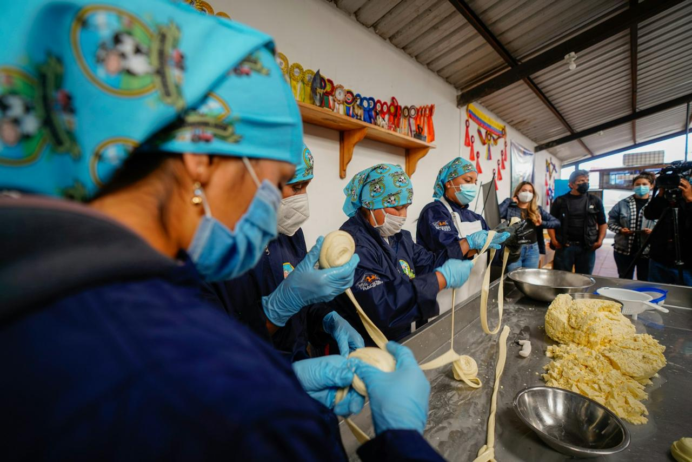

Our History
Ubuntu Bridge was founded to address a simple, urgent problem: children cannot learn on empty stomachs. Starting with a single partner school, we have grown to support several primary schools across Johannesburg, combining daily after-school meals with structured homework and literacy support.
Mission
To ensure that no child's education is limited by hunger, by providing consistent nutrition and learning support after school hours.
Vision
A community where every child has equal access to food security and quality educational support, regardless of household income.
Our Team
Our programme is run by a small core team of coordinators and a network of volunteer tutors and kitchen staff, working closely with each partner school's teaching staff.
